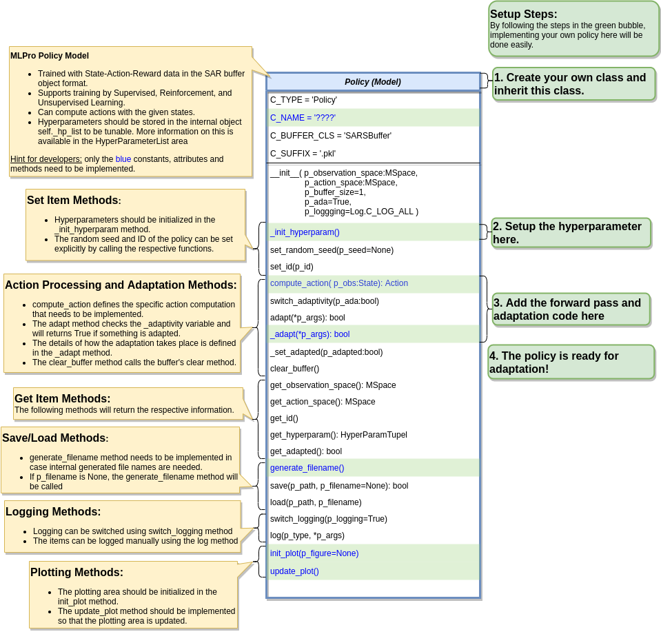

9.4.1. Custom Policies¶
Policy Creation
Creating a custom RL policy that satisfies the MLPro interface is straightforward. First of all, the users need to inherit a base Policy class. Then, the users can develop their custom policies by fulfilling at least 2 main functions, namely compute_action and _adapt, as shown in the following code. The compute action method (compute_action) is a function to calculate an action in the current state. Meanwhile, the adapt method (_adapt) is a function to optimize the policy according to past experience.
from mlpro.rl.models import * class MyPolicy (Policy): """ Creates a policy that satisfies mlpro interface. """ C_NAME = 'MyPolicy' def compute_action(self, p_state: State) -> Action: """ Specific action computation method to be redefined. Parameters: p_state State of environment Returns: Action object """ .... def _adapt(self, *p_args) -> bool: """ Adapts the policy based on State-Action-Reward (SAR) data that will be expected as a SAR buffer object. Please call super-method at the beginning of your own implementation and adapt only if it returns True. Parameters: p_arg[0] SAR Buffer object """ if not super().adapt(*p_args): return False .... return True
Hyperparameters of the policy should be stored in the internal object self._hp_list, so that they can be tuned from outside. The hyperparameter initialization method (_init_hyperparam) can be used in this case. To set up a hyperparameter space, please refer to our how-to file.
Policy from Third Party Packages
Alternatively, the user can also apply algorithms from Stable Baselines 3 by using the developed relevant wrapper for the integration between third-party packages and MLPro. For more information, please click here.
Algorithm Checker
A test script using a unit test to check the developed policies will be available soon!